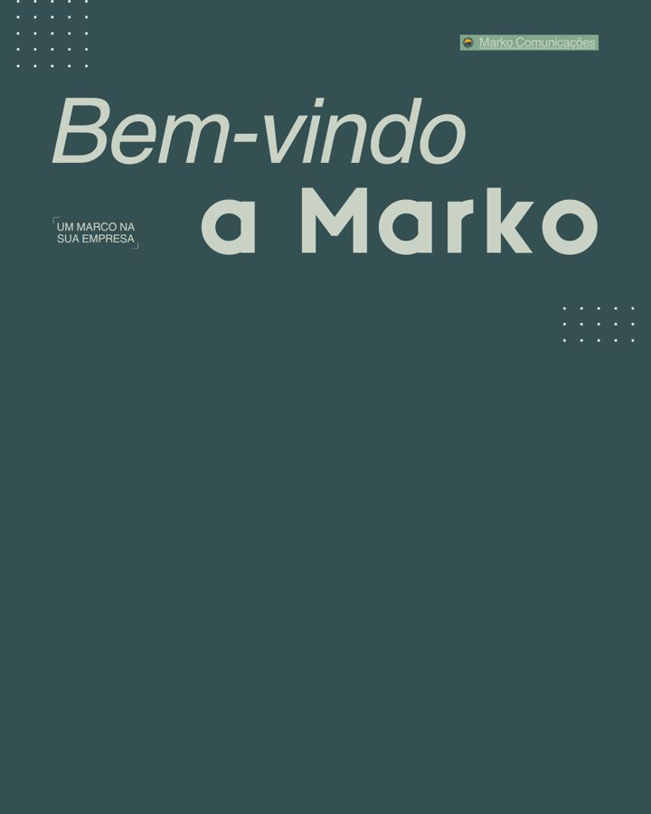
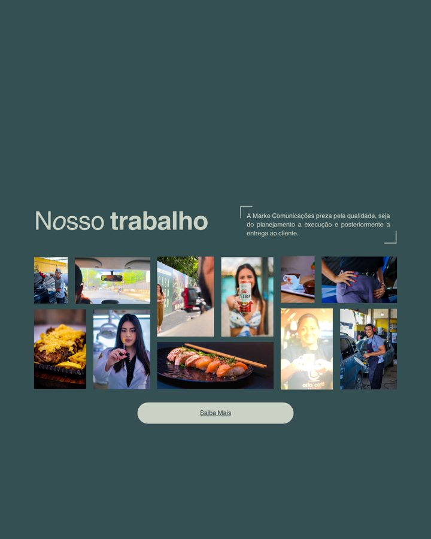
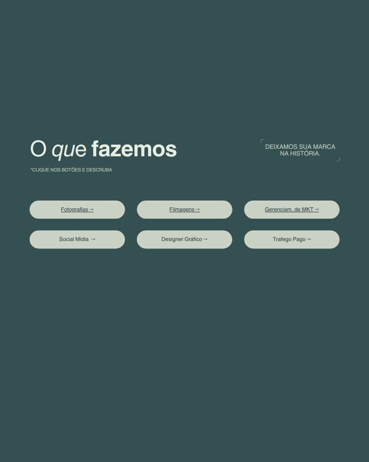
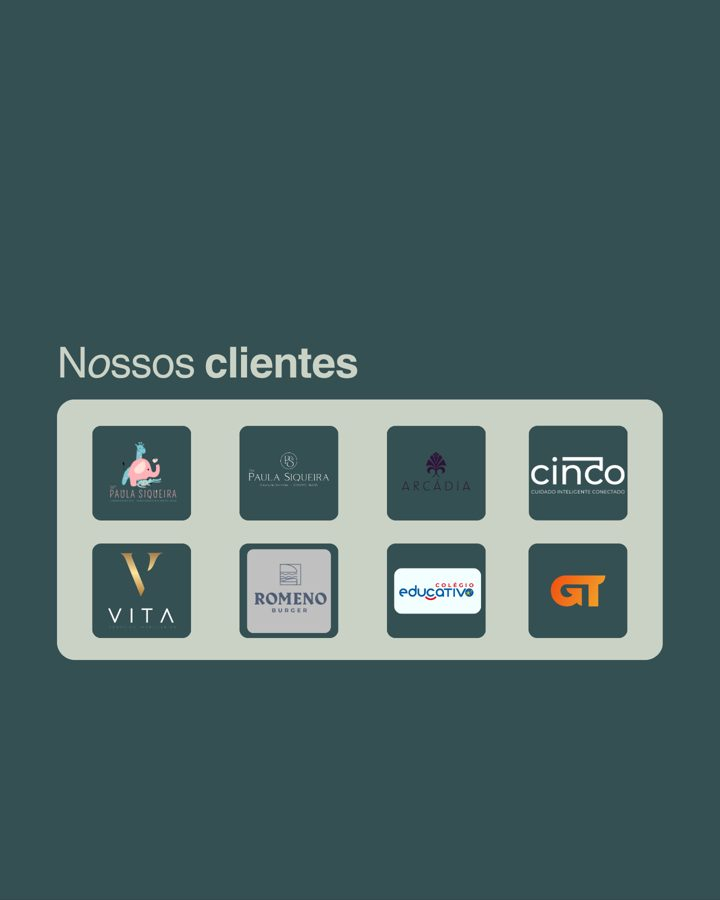
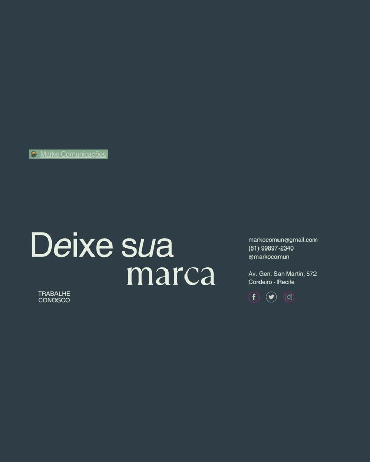
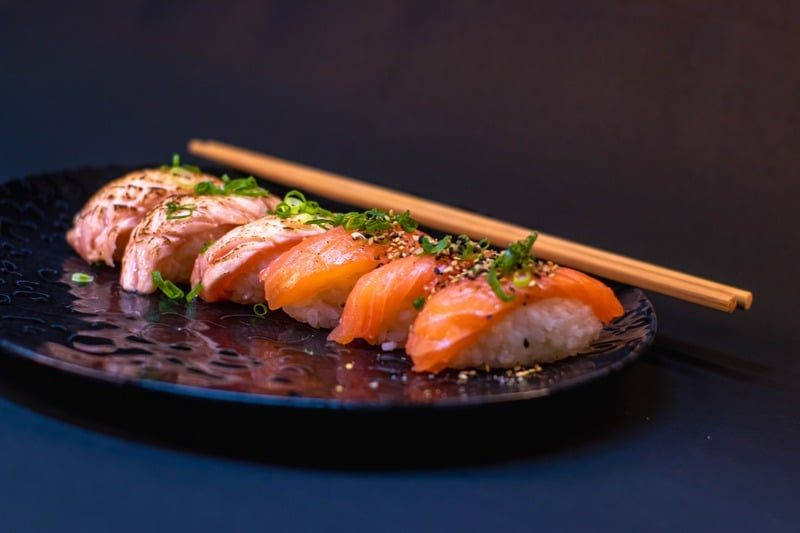
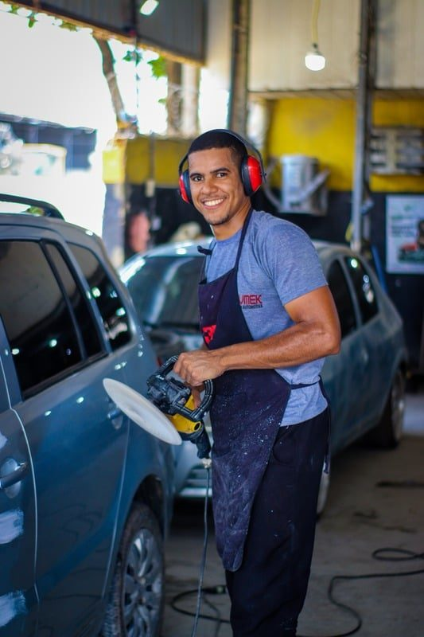
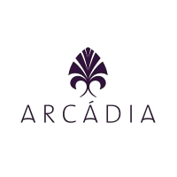

Texto e títulos
Nosso trabalho
Helvetica World → Arimo
Mesma métrica da Helvetica. O próprio site do Canva já carrega a Arimo.
Guia da marca
e do site
A identidade que já estava no site do Canva, organizada para virar uma landing page de verdade, com um admin para trocar cores, fontes, textos e imagens sem mexer em código.

01
Nada foi inventado do zero. Cores, fontes, textos e fotos saíram das cinco páginas do site atual (home, sobre, foto, vídeo e gestão de marketing) e do Instagram @markocomun.




02
Rosa dos ventos com montanhas e um sol dourado: o “marco” que aponta o caminho. Ao lado dele, o nome vai escrito na fonte de texto.
Pendente: o arquivo original do símbolo em vetor (SVG, PDF ou AI) ou PNG transparente grande. Sem ele, o símbolo não pode aparecer grande no site.
03
Tiradas do código do site no Canva. O dourado vem do sol do símbolo. Esta página lê as cores publicadas no admin; clique num código para copiar.
| Tema | Amostra | Uso | Razão | Mínimo |
|---|
Corrigido em relação ao site atual: a etiqueta “Marko Comunicações” usava texto claro sobre o verde-folha (cerca de 2:1). Agora o texto é ardósia (4,2:1), e a etiqueta usa 16 px ou mais.
04
O site usa três fontes licenciadas pelo Canva, que não podem ir para outro site. Cada uma ganhou uma substituta gratuita parecida, já incluída na pasta.
Texto e títulos
Nosso trabalho
Helvetica World → Arimo
Mesma métrica da Helvetica. O próprio site do Canva já carrega a Arimo.
Nome da marca
a Marko
Fashion Fetish Heavy → Jost Bold
Geométrica pesada com “a” redondo. Só no hero.
Uma palavra em serifa
marca
TT Ramillas → Fraunces
Fecha uma frase de display: “Deixe sua marca”.
05
Dois cantos finos, em cima à esquerda e embaixo à direita. Emolduram rótulos curtos e o parágrafo ao lado dos títulos.
5 × 4 pontos a cada 24 px, nos cantos do hero. No máximo duas por tela, nunca atrás de texto.
Todo botão é pílula, com o rótulo sublinhado e a seta → quando leva a outra parte.
Nossos clientes
Regular, itálico e negrito na mesma linha. O “o” em itálico é um tique da marca.


Gente real trabalhando e produto real. Sem banco de imagens, sem arredondar foto.

Painel sálvia com ladrilhos verde-petróleo; os logos dos clientes ficam como vieram.
06
As mesmas peças do design system (prefixo mk-), em uso no site.
Etapas
Analisamos as carências do seu negócio, online e físico.
Ações que irão alavancar sua marca.
Material de qualidade que fortalece o vínculo com o público.
Depoimento
“Mano, tu salvou kkkk. Eu não tinha tempo nem ideia do que postar, e agora tá tudo organizado e dando resultado.”
07
“Não é sobre nossa agência, mas sobre sua empresa.” O cliente é o assunto; a Marko fala por “nós” e trata o cliente por “você”.
Assim
Evitar
08
Coisas para corrigir. O site já usa a versão corrigida.
| Onde | Está assim | Fica assim |
|---|---|---|
| Todas as páginas | “*Clique nos botões e descruba” | “*Clique nos serviços e descubra” |
| Todas as páginas | “Trafego Pago” | “Tráfego Pago” |
| Todas as páginas | “Designer Gráfico” | “Design Gráfico” (é o serviço, não a pessoa) |
| Todas as páginas | “Gerenciam. de MKT” | “Gestão de Marketing” |
| Gestão de MKT | “ações que iram alavancar” | “ações que irão alavancar” |
| Gestão de MKT | “01 Analise”, “03 execução” | “01 Análise”, “03 Execução” |
| Gestão de MKT | “ao objetivo, clientes. entregando… seu vinculo” | “ao objetivo, os clientes, entregando… vínculo” |
| Sobre | Menu em inglês do modelo (Home, About, Our Clients, Awards & Press) | Menu da Marko, em português |
| Rodapé | Ícones de Facebook e Twitter em rosa do modelo, sem link para o Instagram | Instagram, WhatsApp e Linktree, na cor da marca |
| Depoimentos | “Rapha Vasconcelos” (site) e “Rapha Vasconcellos” (Instagram) | Confirmar a grafia com o cliente |
| Destaques “Making Off” e “Respost” | “Making of” e “Repost” | |
| Site inteiro | Nenhum link direto para WhatsApp nem formulário | Botão de WhatsApp no topo e formulário de orçamento |
09
No admin a Marko muda o site sem programador. Cada cor da paleta alimenta várias funções; trocar uma cor atualiza todas as partes que dependem dela.
| Função | Tema Marko | Tema Claro |
|---|
data/), com histórico das últimas publicações. Imagens são reduzidas para 1600 px antes do envio.